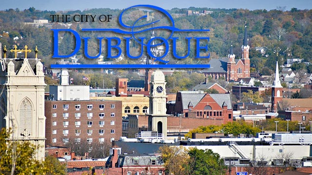
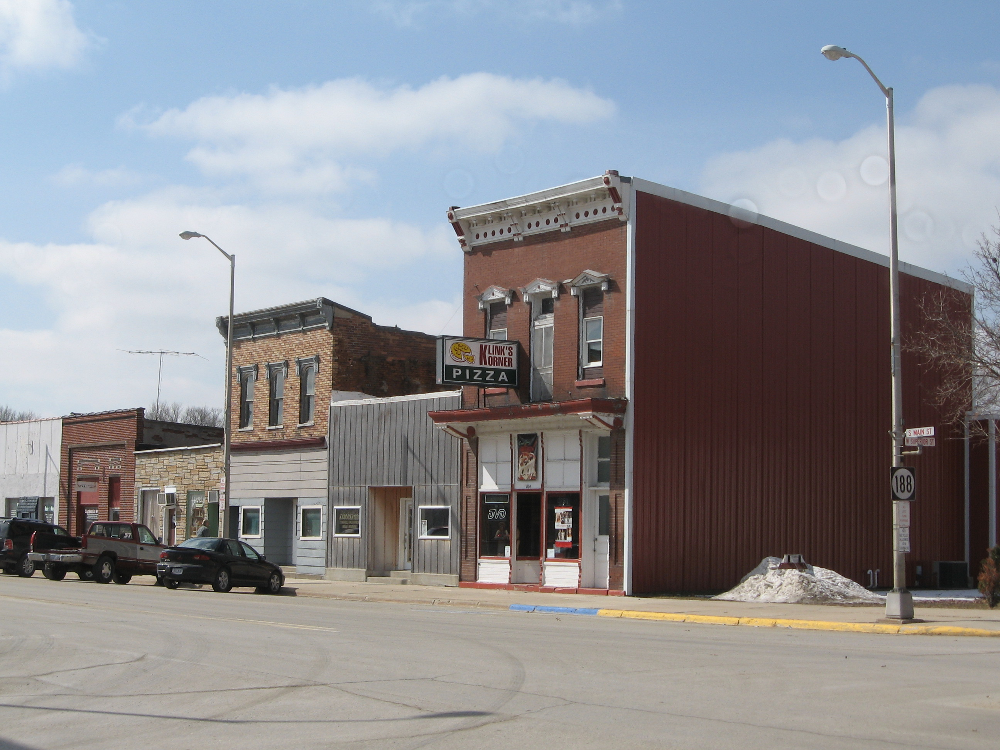
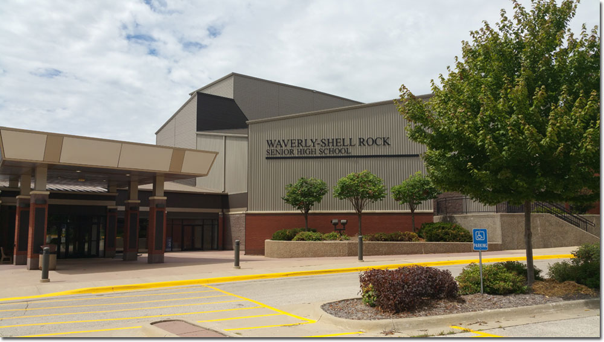

My home town
I am originally from Dubuque, Iowa. Dubuque is a great place to visit, but I wouldn't really advise living there. There are many different attractions and sites to see. Such as the Julien Dubuque Monument , the Shot Tower , the 4th Street Elevator , and many more!
My Childhood
I was born, and raised in Dubuque until I was about 10 years old, and lived with my dad after my parents had divorced when I was 7. I went to Prescott Elementary School, had and still have many of my friends from there. I moved to my mom's after getting bullied by a few people on my way home from school daily. I was in what they called "enrichment" but really it was just the TAG program with a different name. After moving with my mom to Clarksville, Iowa. Which, was a very big change going from the city of Dubuque, to the tiny mere miles town of Clarksville.
Going through Clarksville schools was pretty easy, they were (and still are as far as I know) behind the curriculum of most other Iowa schools. I was also in the TAG program there from 5th grade up, until I moved. Though, Clarksville was easy while I was there, it set me back education-wise when I moved to Waverly in the 8th grade. I lived in Clarksville and made many friends and "enemies", along with getting into plenty of trouble, as most kids do. I lived there for about 4 years or so, then to Waverly.
After moving to Waverly I realized that I was able to keep up with most of the curriculum; English, Science, and History were all at about the same area, or at least understandable. But math on the other hand, I have been in accelerated math since 7th grade, so moving mid-year of Algebra I, Waverly was much farther ahead and I can guarantee I missed out on about of 1/2 of Algebra I's info. From there math has been a bit more of a struggle due to having to play catch-up once I moved. Other than that, I have everything else pretty set in this point of time. Plenty of friends, family, and support for everything I need.
Highschool
I started highschool at Waverly-Shell Rock Highschool not long after I moved to Waverly. I am the class of 2020, and am still currently enrolled in highschool. There is a lot left to do, and I am a junior this year. I don't play any sports, or do any extra-curriculars, that never really has been "my thing". I started working my sophomore year at Taco Johns, and worked there for about 6 months. Then Sasquatch Jack's opened, and I started to work there and quit at Taco John's. I am still currently working at Sasquatch Jack's, and have moved from where I started as a dishwasher at $7.25/hr, up to being a cook at $10.00/hr and I'm sure there are more raises to come! School goes well, but sometimes I do get an excess amount of homework and end up having to stay up practically all night in order to complete it on time, but I guess that is just a part of life now. I also started to take college classes my junior year- this being my first college class. I look forward to what's to come!